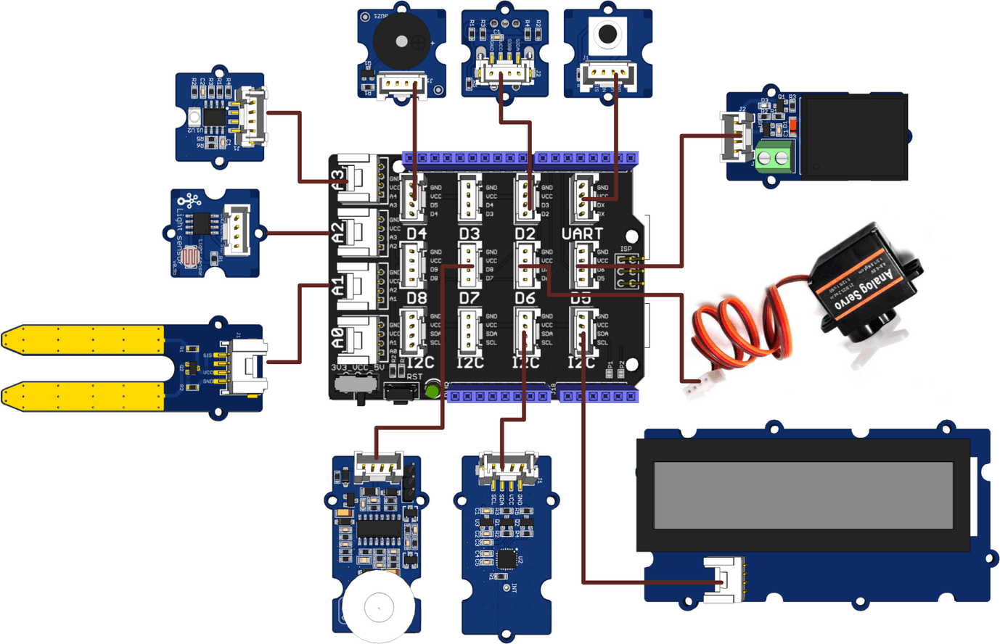
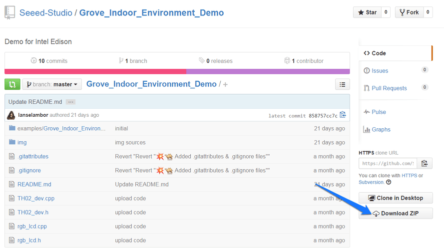
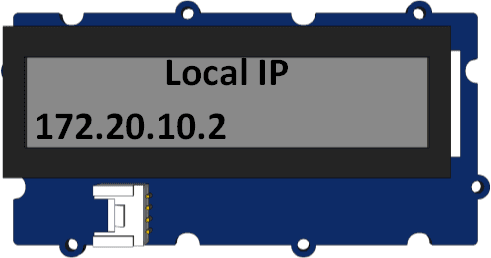
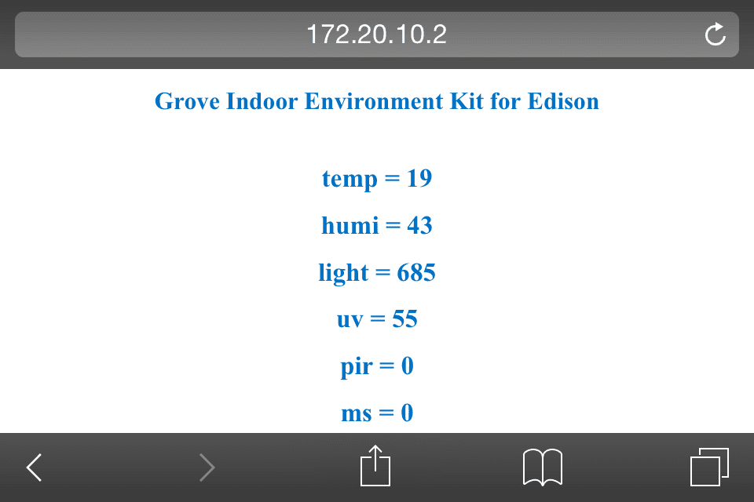

Grove IoT Developer Kit – Microsoft Azure Edition contains an Intel® Edison module, an Intel® Edison for Arduino board, a Grove Base Shield, a set of Grove sensors and actuators with build-in Grove ports for rapid prototyping. Simply plug in the modules and you are ready to create.
The Intel® Edison compute module is designed for expert makers, entrepreneurs, and some industrial IoT applications, it provides ease-of-development for a range of prototyping projects or commercial ventures when performance matters. With an expansion board interfaces with a wide range of Arduino shields, Intel® Edison for Arduino allows quick and easy prototyping with open source hardware and a software development environment.

Base Shield V2(to Wiki)

Grove - Button(to Wiki)

Grove - Sound Sensor(to Wiki)

Grove - 3-Axis Digital Accelerometer(±1.5g)[(to Wiki)

Grove - Touch Sensor(to Wiki)

Grove - Light Sensor v1.2(to Wiki)

Grove - Temperature Sensor(to Wiki)

Grove - Rotary Angle Sensor(P)(to Wiki)
Grove - Piezo Vibration Sensor(to Wiki)

Grove - LCD RGB Backlight(to Wiki)

Grove - Buzzer(to Wiki)

Grove - Red LED(to Wiki)
Grove - Green LED(to Wiki)
Grove - Blue LED(to Wiki)
Gear Stepper Motor with Driver (to Arduino Tutorial)
Before we work on any Grove modules, let's firstly get started with Intel® Edison Board, you can follow the detailed instructions on the official site of Intel® Edison to:
Install the compute module, attach the legs, and plug in your cables.
| Windows | The Windows 64-bit installer will install your drivers, update your firmware, and let you install your development environment (IDE) | Download 64-bit version |
| OS X | The Mac* OS X* installer will update your firmware, and let you install your development environment (IDE) | Download |
| Linux | The Linux* installer will update your firmware, and let you install your development environment (IDE) | Download |
If you are have a windows 32-bit system or having errors with the installer, Intel also provide manual process to install the drivers or update your firmware:
| Windows | Try Manual Process |
| OS X | Try Manual Process |
| Linux | Try Manual Process |
You'll need a serial terminal connection to your board for flashing the firmware
How can you build an IoT device without the "I"? Let's connect your board to the WiFi network.
As we've already installed the development environment including Arduino IDE in Step 2 (if not, you can download the latest Arduino IDE here. ) now as your very first practice, let's try to blink an LED on Intel Edison Board with Ardunio IDE.
Connect the Grove - Base Shield to Intel Edison for Arduino via the pin connectors.
Using 26AWG Grove Cable making the following connections:
| Grove Modules | Connected to |
|---|---|
| Temperature&Humidity Sensor | I2C |
| Moisture Sensor | A1 |
| Light Sensor | A2 |
| UV Sensor | A3 |
| PIR Motion Sensor | D7 |
| Encoder | D2 |
| Button | UART(D1) |
| LCD RGB Backlight | I2C |
| Relay | D5 |
| Servo | D6 |
| Buzzer | D4 |

1. Open the web site: Grove_Indoor_Environment_Demo to download the whole project.

2. Click Tools > Serial Port and select the Com # that the Intel Edison is connected to

3. Click Sketch>Import Library…>Add Library and import the library downloaded at step 1
4. Click File>Examples> Grove_Indoor_Environment_Demo and select the demo Click upload icon

5. Open Serial Monitor, it will print the sensors’ information:
6. Rotate the Encoder to check the sensor value on the LCD.
7. In the “Send TextBox”, you can enter the following command to operate the sensors and actuators:
set [sensor][condition:>, < or =][ threshold],[actuator]=[action]
| Example | Description |
|---|---|
| set temp>40, relay=1 | if temperature is higher than 40℃, the relay opens. |
| set temp>40, sleep=1 | if temperature is >40℃, nothing to do. |
| set humi>60, buzzer=1 | if humidity is >60%, the buzzer beeps. |
| set light>600, servo=90 | if light intensity is >600, the servo truns 90°. |
| set uv>80, relay=0 | if UV intensity is >80, the relay closes. |
| set pir=1, buzzer=1 | if people detected, the buzzer beeps. |
| set ms>40, relay=1 | if moisture is >40, the relay opens. |
| set ssid=name, psw=password | set the wifi SSID and Password.you can open a web browser, and go to the IP address displayed on the Serial Monitor or LCD. The default port is 88. he default port is 88. Such as: 192.168.1.101:88 |
Note:
8. WiFi connection. open the Serial Monitor, and set your ssid and password(as below). Check the local IP on the LCD or Serial Monitor. On a device connected on the same network, open a web browser, and go to the IP address above, you can see the sensor value.
Note: When visiting the web server, a port number(88)should be added,such as: 172.20.10.2:88.


If you have questions or other better design ideas, you can go to our forum or wish to discuss.
Copyright (c) 2008-2016 Seeed Development Limited (www.seeedstudio.com / www.seeed.cc)